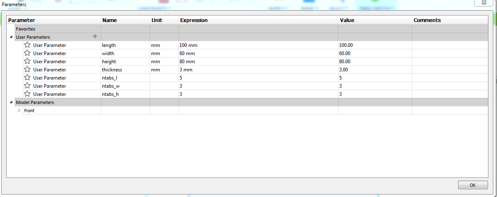
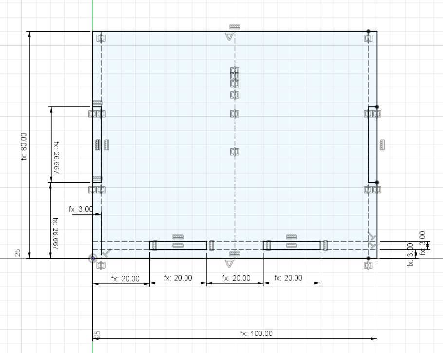
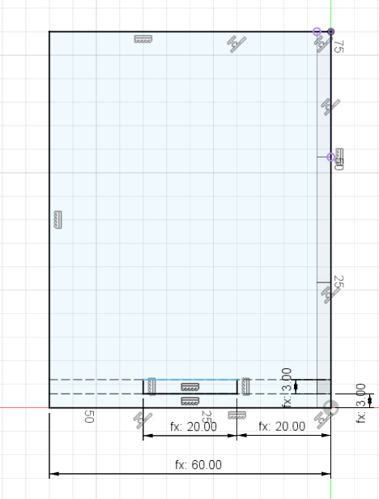
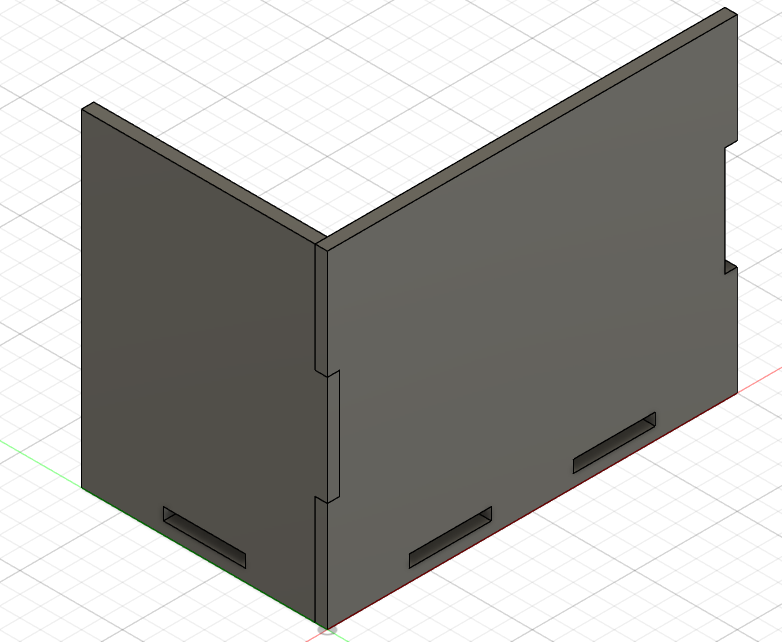
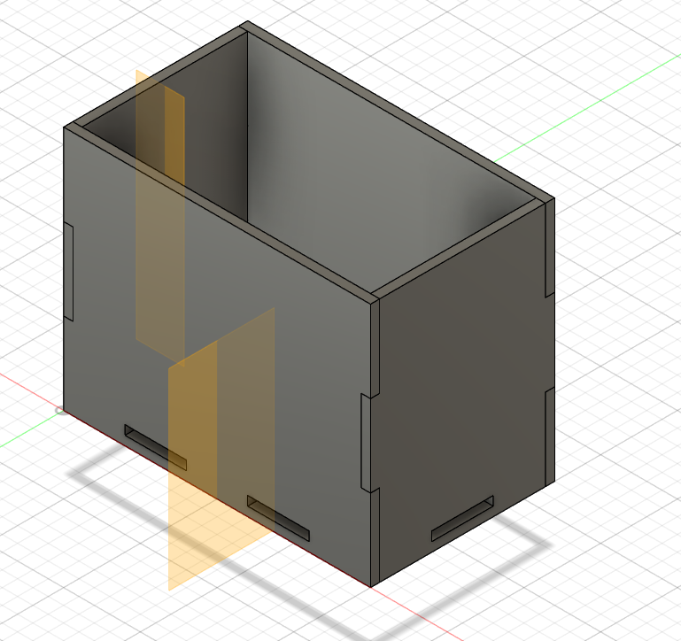
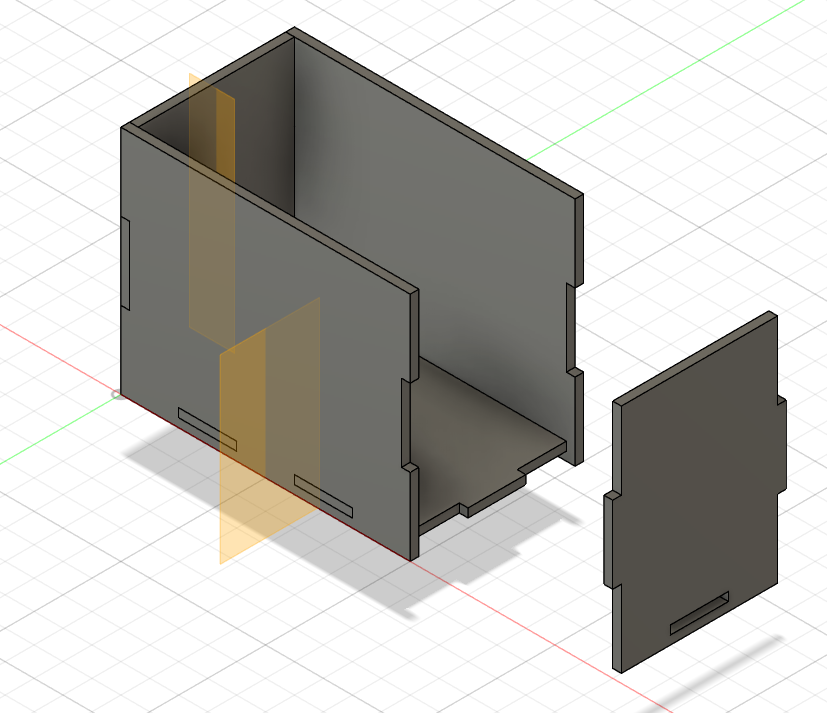

Computer Aided Design
Slot Box Sample Design
Front Side
I first started off by creating a new component called front as i will first be working on the front of the box. I then created a new Sketch on the X-Z Plane. After that, I went ahead and drew a rectagle from the origin. I then created parameters (Modify > Change Parameters) for the box length, width, height and thickness of wood used. The measurements can be anything as they a simply just a placeholder for now but I set mine as 100mm, 60mm, 80mm and 3mm respectively. I added one more parameter which is to define the number of tabs we apply on each of the sides. I named the parameters ntabs_l for length, ntabs_w for width and ntabs_h for height. They do not have a unit and is just a number. My parameters looks like this:
{kind=link}
Click to enlarge
After that, I went ahead and dimensioned the height and length of the rectangle that I made earlier, and drew a perpendicular contruction line down and two across, and dimensioned it to the thickness parameter. These construction lines act as a reference line to in creating the tabs. I sketched a rectangle to the virtical construction line and dimensioned the length between the bottom portion of the rectangle to the origin, and dimensioned it to height/ntabs_h. As for the height of the rectangle itself, i dimensioned it to be identical with the previous dimension which is set as d13. I simply did a similar step for the bottom horizontal construction lines. This is then followed by a mirror of the vertical tabs. My final product with dimensioning will look as such:
{kind=link}
Click to enlarge
Lastly I ofcourse extruded it using the thickness parameter excluding the tabs, and that is done for the front portion of the box.
Left Side
Before I start i ofcourse went ahead and created a New Component and named it left. Once that is done, i created a sketch and made sure to sketch it on the face of the left side from the front piece. I did it by holding left click and selecting the face. And the drew a rectangle and collinear it and dimensioned the base with the width parameter. Next I did the same as the front by adding construction lines and tabs. As for the dimensions of the tabs, since we are working on the width, it will therefore be width/ntabs_w. The final product looks like so:
{kind=link}
Click to enlarge
Just like before, I extruded it afterwards except instead of a positive value, thickness is now negative. However, we are not done there. We now have to use the combine command (Modify > Combine) to create the edges. If done correctly, the left and front pieces should combine nicely to look like so:
{kind=link}
Click to enlarge
Right & Back Side
Since we already have the front and left side done, we can simply just mirror those bodies. To do so, I first created a midplane (Construct > Midplane) and selecte the two extreme bodies of the front piece first. now i can mirror the the left body (Create > Mirror). Important to note that the Pattern Type should be set to bodies. Then you can do the mirror. The back piece is created in the same manner but instead, the midplane is created on either the left or the right piece before doing the mirror. Next we have to fix the edges. To do so, combine (Modify > Combine) the back and the side pieces with the back piece being the Tool Bodies and the sides being the Target Body. Once done correctly it should look like this:
{kind=link}
Click to enlarge
Bottom Piece
Now we will be working on the bottome piece. I firstly created a new component, renamed it to bottom and sketched it on the surface of one of the tabs. I then went ahead and drew a rectangle and constraint it to the sides of the original box. Next, I extruded it by the parameter thickness once again and once again, used combine to finish off the edges. Once all that is done, the final product should look as such, with all the edges created:
{kind=link}
Click to enlarge
If these instructions were still unclear, there is a video I took as reference in the making of the Fusion 360 Parametric Box for Laser Cutting with a clearer explanation if needed.